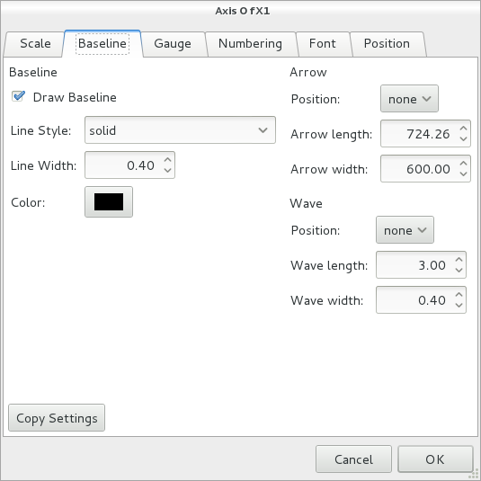

| New graph |
Create a new chart to discard the current graph. To add a chart to
graph the current Axes - Create Add menu. |
| Load graph |
Files that are stored graph (NGP file) to load the. Ngraph PRM
file can also be loaded for DOS. |
| Save as |
Name and save the current graph. |
| Save |
Saves the current graph. |
| Export image |
GRA, PostScript, EPS, SVG, PDF, then print the file formats of PNG. |
| Draw order |
You can specify a graphics object to draw, change the drawing order. |
| Page Setup |
Margins of the paper and to specify the magnification as a whole. |
| Print Preview |
Make a preview. |
| Print |
And print. |
| Current directory |
Change the current directory. |
| Add-in |
Run the program with a small feature sub. Please refer to the Add-In. |
| Ngraph Shell |
Sh-like shell of Unix (like a command interpreter) to start. |
| Quit |
Quit Ngraph. If not then save the changes have been made to question whether the graph is saved. |
| Cut Copy |
Legend you choose to merge objects "cut" or "Copy" to (cut the axis object can not be copied). |
| Paste |
Or legend string is stored in the clipboard, and paste the merge object. |
| Delete |
Deletes the selected object. |
| Align |
Align the selected objects. |
rotate 90 degree clockwise
rotate 90 degree counter-clockwise |
Legend you choose to rotate the axis object (merge objects can
not rotate). mark the object is changed by rotating the position
only. |
flip Horizontally
flip Vertically |
Legend you choose to flip the axis objects (text objects can not
merge and inverted). mark object position changes only by
inversion. |
| Draw |
Draw a graph Viewer Window.
It's easier to press  button. button. |
| Clear |
Clear the Viewer Window. Not be cleared because of the chart itself, you can draw a graph will appear again. |
| Data Window |
The open and close the Data Window. |
| Axis Window |
The open and close the Axis Window. |
| Legend Window |
The open and close the Legend Window. |
| Merge Window |
The open and close the Merge Window. |
| Information Window |
The open and close the Information Window. |
| Coordinate Window |
The open and close the Coordinate Window. |
| default Window config |
Has been saved window placement (placement of windows startup Ngraph) position. |
| Clear information window |
Clears the contents of the Information Window. |
Status bar, Scroll, Ruler, cross-Gauge, Command toolbar and Toolbox
|
Show, hide. |
| Path |
Legend (linear curve) settings, and deletes. You can not create a
new menu. Creating a new Viewer Window
Please specify the position of the mouse button. |
| Rectangle |
Legend (square) settings, and deletes. You can not create a new menu.
Creating a new Viewer Window
Please specify the position of the mouse button. |
| Arc |
Legend (circle) settings, and deletes.
You can not create a new menu.
Creating a new Viewer Window
Please specify the position of the mouse button. |
| Mark |
Legend (Mark) settings, and deletes.
You can not create a new menu.
Creating a new Viewer Window
 Please specify the position of the mouse button.
Please specify the position of the mouse button. |
| Text |
Legend (text) settings, and deletes.
You can not create a new menu.
Creating a new Viewer Window
 Please specify the position of the mouse button.
Please specify the position of the mouse button. |
| Font aliases |
Then add or remove fonts used in the legend tick numbers and text.
Dialog [OK] button is pressed the setting changes are not saved when you exit the program.
[Save] button is pressed the setting changes will take effect even when started next time. |
| Viewer |
Such resolution specifies the Viewer Window.
Dialog [OK] button is pressed the setting changes are not saved when you exit the program.
[Save] button is pressed the setting changes will take effect even when started next time. |
| External viewer |
Specifies an external viewer, such as resolution.
Dialog [OK] button is pressed the setting changes are not saved when you exit the program.
[Save] button is pressed the setting changes will take effect even when started next time. |
| Add-in Script |
You can add a new add, or delete them.
Dialog [OK] button is pressed the setting changes are not saved when you exit the program.
[Save] button is pressed the setting changes will take effect even when started next time. |
| Miscellaneous |
You can specify the editor, or to change the default storage method of the graph.
Dialog [OK] button is pressed the setting changes are not saved when you exit the program.
[Save] button is pressed the setting changes will take effect even when started next time. |
| save as default (Settings) |
Save the settings to take effect on the configuration changes to the next even when you start Ngraph. |
| save as default (Graph) |
Ensure that the initial state of the current graph.
With the frame graph is the initial state distribution. |
| Data file default |
Change the initial state of the Data dialog box. |
| Legend text default |
Change the initial state of the legend text. |
| File |
The data file name. |
| Reading configuration from file |
If the parameters are described in the first set of data files that capture parameters.
How to set parameters for the description of the data files are data files embedded options
section. |
| Edit |
Opening a file editor to edit the data.
Editor will be invoked [Settings] - [Other] to change the menu. |
| X column |
The data used as the horizontal axis, the number of columns in the data file.
When 0 is 1, 2, ... and data. |
| X axis |
Axis used as the horizontal axis.
Serial number of the axis (the line number displayed at the top of the Axis Window) is specified in the list of combo box that lists the name of the axis. |
| Y column |
The data used as the vertical axis, number of columns in the data file.
When 0 is 1, 2, ... and data. |
| Y axis |
Axis used as the vertical axis.
Serial number of the axis (the line number displayed at the top of the Axis Window) is specified in the list of combo box that lists the name of the axis. |
| Plot |
| Type |
mark, such as how to plot line. |
| Mark |
Mark the type of mark used when the type of plot. |
| Curve |
Interpolation method is used when the curve type.
spline (spline interpolation), spline_close (closed spline), bspline (B-spline interpolation), bspline_close (closed B-spline interpolation).
To use B-spline interpolation requires at least seven the number of data points. |
| Fit |
Open a dialog box to specify how the type of fit when fitting.
Once the type to fit you always you do not specify how fitting this button, an error of `fit 'is not specified at the time of the drawing. |
| Color 1 |
Plot lines, such as color mark. |
| Color 2 |
The type of mark, rectangle_fill, bar_fill_x, when the second color bar_fill_y. |
| Clip |
Without this check, the data are plotted on the outside of the axis. |
| Line Style |
Type of plot lines.
The length of the dotted line, to specify in detail the interval, "100 10" to specify the length of the repeating elements as dashed. |
| Line Width |
The width of the plot lines. |
| Size |
The size of the mark, the size of the error bars and the length of the bar. |
| Miter |
Miter limit.
To decide where to draw the line at the corner of the contour. |
| Join |
Contour line of the corner. |
|
|
|
| Conversion Formulas |
| X and Y smooth |
Average number of adjacent data.
When 1, the average of three data taken together with the data before and after one. |
| Conversion Formulas |
The conversion formula to convert the formula if you want to plot the data. |
F (X, Y, Z) =
G (X, Y, Z) =
H (X, Y, Z) = |
User-defined functions.
The function defined by Here, F in conversion formula (), G (), H () can be used as. |
|
|
|
| Read |
| Head skip |
The number of rows to skip at the beginning of a data file loading. |
| Read step |
When the two data files are read every other line. |
| Final line |
Line to stop reading. End of the file loaded by -1.
Version only GTK: to line the last 10 -10, as may be specified. |
| Remark |
Lines beginning with a specified character here is not loaded and is considered a comment line. |
| IFS |
The character used to separate the data.
The default is a space, tab, comma, brackets. |
| CSV |
When checked, non-space "delimiter" is continuous, there is no data shall be treated as a continuous number. |
|
|
|
| Mask |
| Add |
"New Row" to add the specified data row as a mask. Add in the Viewer Window Mask
 Using the mode could be done by specifying the data plotted in mice.
Using the mode could be done by specifying the data plotted in mice. |
| Remove |
"Mask Line" to unmask the selected data row in the list. |
|
|
|
| Move |
| Add |
"New Row" row for the specified data "X, Y" to interpret the data as specified in the "moving line" to be added to the list.
Data movement in the Viewer Window
Using the mode could be done by specifying the data plotted in mice. |
| Remove |
"Line move" to remove the selected data row of data movement in the list. |
|
|
|
| Apply all |
In the file selection dialog box, if you specify multiple data files for subsequent data file is used for the current configuration. |
| Copy Settings |
Imported from other data files on each tab to set parameters. |
| Type |
Types of fittings.
poly (polynomial), pow (power y = a * x ^ b), exp (y = exp index (a * x + b)), log (log y = a * log (x) + b), user (user defined by the equation fit) from their. |
| Dim |
When the degree of the polynomial poly type. |
| Through |
If checked "X, Y" fitting is made conditional on passing a specified point.
If the user has to type, this option is not specified. |
| Weight |
To fit to the weighted data.
Conversion formula
may be used for similar functions, F and data file parameters% Fxxxx (), G (), H (), COLOR (), MARKSIZE () function, etc. are not allowed.
Regular fit, corresponding to a weight. |
| Min, max, div |
To set the drawing method of fitting results.
Fit results of the expression values of X, "minimum" to "maximum" up to "break" in a straight line connecting the Y value is obtained by dividing the number to evaluate.
"Max", "minimum" of 0 is used for both minimum and maximum axis X. |
| Interpolation |
If checked, the results fit rather than a collection of straight lines, curves are drawn by spline interpolation. |
| Formula |
Formula used to fit when the user types.
Parameters obtained by fits and from 09% to 01%. |
| Converge |
When the user types, convergence criteria specified in%.
By default, so 1%, and accuracy of the fit result is 1 / 100. |
| Derivatives |
If you check, calculate the value of the derivative parameters using the differential equation.
If not checked, parameters to calculate the approximate value of the derivative numerically. |
| %00 to %09 |
If the user types are fitting parameters are obtained by iterating over, to specify that the initial iteration.
The fit function does not converge and enter a value close to the fitting results. |
| dF/d(% 00) to dF/d(%09) |
Fit parameter fitting formula over %00 - %09 partial differential equation.
"Specifying differential form" that must be specified if checked. |
| Result |
To view the results fit. |
| Copy Settings |
Fit of the data set to capture another file. |
| Load |
Fitted with load and save settings. |
| Save |
To save the current settings fit.
As can be distinguished in reading later "profile" to specify.
Configuration is stored in a file named fit.ngp. |
| Scale |
| Min, max |
The maximum and minimum axis scale.
"Minimum" "maximum" "increment" is the all zero, the scale is automatically set when the drawing is considered unset. |
| Inc |
Graduation numbers are an "incremental" value
attached to each of the grid is "incremental" to
"number" split Splits the value given to each. Law
"scale" when the log is "incremental" 10 in
10, 100, assigned a number in memory as 1000, and
"incremental" When one is 1, 2, are marked with the
number in memory as three. |
| Scale |
linear (normal linear axis), log (logarithmic axis), inverse (reciprocal axis), MJD (as displayed in the time axis values MJD) from their.
MJD date is displayed if strftime (3) strftime because it uses (3) The date is displayed outside as it is handled by MJD.
|
| Clear |
Unset the scale ("minimum" "maximum" "increment" all zero) to. |
| File |
To automatically configure the data files in a specified scale. |
| Div |
"Incremental" further dividing the number of divisions. |
| Ref |
Scale is unset ("minimum" "maximum"
"increment" all zero), then used instead of the
specified axis is set here. Axis rather than the serial
number, unique number determined at runtime (a number that
begins with ^ that appears at the end of the Axis Window) is
specified in the list of combo box that lists the name of the
axis. |
|
|
|
| Baseline |
| Draw Baseline |
Draw a base line of the axis stops when unchecked. |
| Line style |
Kind of baseline.
The length of the dotted line, to specify in detail the interval, "100 10" to specify the length of the repeating elements as dashed. |
| Line width, color |
The width of the base line and color. |
| Arrow, Wave |
Baseline to the end of the shaft can be added arrows and corrugated.
Arrows crossing the axis of the graph, is used to represent wave-axis was divided with the two axis.
The arrow "length" and "width", the baseline "line width" specified in% against. |
|

|
|
| Gauge |
| Gauge |
none (no grid), right (clockwise direction of the baseline axis), left (clockwise direction of the axis baseline), both (sides) choose from. |
| Min, max |
To specify a range of scales with the grid axis.
0 when both will be marked with a tick in the entire shaft. |
| Line style |
Types of grids.
The length of the dotted line, to specify in detail the interval, "100 10" to specify the length of the repeating elements as dashed. |
| Color |
Color of the gridlines. |
| Length 1, 2, 3 |
The length of the grid.
Good width 1 fine scale grids, 2, and 3. |
| Width of 1, 2, 3 |
The width of the grid.
Good width 1 fine scale grids, 2, and 3. |
|
|
|
| Graduation numbers |
| Numbering |
none (no grid), right (clockwise direction of the baseline axis), left (clockwise direction of the axis baseline), both (sides) choose from. |
| Begin, Num |
Number of scale graduations are "incremental" (or
multiples thereof) is attached to each, with the nth or
"starting point" and the number with
"number" to specify. "Starting point" from
the beginning with 0 being the "number" is attached to
the end with -1. |
| Step |
The scale graduation numbers "incremental" If you want every integer multiple of the value of its multiples.
Automatically set to 0. |
| Add plus |
When the number is zero or a positive value scale, be sure to add the +. |
| Fraction |
The number of decimal places for numeric scale. |
| Head |
String of digits preceded each tick. |
| Tail |
Subsequent string of numbers attached to each tick. |
| Date/time Format |
To format date and time of MJD-scale method.
About the available settings strftime (3) information. |
| Alignment |
center (center aligned), left (left justified), right (right justified), point (decimal alignment) from their. |
| Direction |
Numeric character drawing direction of the scale. |
| shift (P) |
Axis parallel to the baseline shift the position of the graduation numbers. |
| shift (V) |
Shifted the axis perpendicular to the baseline position of the numeric scale. |
| Log power |
Plot tick one number, 10, 10 or 0 to 100 ^ 10 ^ 1 10 ^ 2 or designated. |
| no Zero |
Tics do not draw a number from 0.
X-axis axis Y (0,0) 0 if you want one together, you do not use this option to display 0, 0 manually put. |
| Auto normalization |
Greater than the number of digits specified here tick numbers (like 100,000), or if small (like 0.00001) has been normalized, [1x10 ^ 5] is attached to the shaft like the legend. |
|
|
The characters of conversion specifications for "Date/time Format" are replaced as follows.
| %a | The abbreviated weekday name. |
| %A | The full weekday name. |
| %b | The abbreviated month name. |
| %B | The full month name. |
| %c | Equivalent to %a %b %e %T %Y. |
| %C | The century number (year/100). |
| %d | The day of the month (01 to 31). |
| %D | Equivalent to %m/%d/%y. |
| %e |
Like %d, the day of the month, but a leading
zero is replaced by a space. (1 to 31).
|
| %F | Equivalent to %Y-%m-%d. |
| %G | The ISO 8601 week-based year with century as a
decimal number. The 4-digit year corresponding to the ISO week
number (see %V). This has the same format and value as %Y,
except that if the ISO week number belongs to the previous or
next year, that year is used instead. |
| %g | Like %G, but without century (00-99). |
| %H | The hour (00 to 23). |
| %I | The hour (01 to 12). |
| %j | The day of the year (001 to 366). |
| %k | The hour (0 to 23); single digits are preceded by a blank. |
| %l | The hour (1 to 12); single digits are preceded by a blank. |
| %m | The month (01 to 12). |
| %M | The minute (00 to 59). |
| %n | A newline character. |
| %p | Either "AM" or "PM". |
| %P | Like %p but in lowercase: "am" or "pm". |
| %r | Equivalent to %I:%M:%S %p. |
| %R | Equivalent to %H:%M. |
| %S | The second (00 to 60). |
| %t | A tab character. |
| %T | Equivalent to %H:%M:%S. |
| %u | The day of the week, Monday being 1 (1 to 7). |
| %U |
The day of the week as a decimal, range 1 to 7, Monday being 1.
The week number of the current year as a decimal number, range
00 to 53, starting with the first Sunday as the first day of
week 01. See also %V and %W.
|
| %V |
The ISO 8601 week number of the current year as a
decimal number, range 01 to 53, where week 1 is the first week
that has at least 4 days in the new year. See also %U and %W.
|
| %w | The day of the week, Sunday being 0 (0 to 6). |
| %W |
The week number of the current year as a decimal number, range
00 to 53, starting with the first Monday as the first day of
week 01.
|
| %x | Equivalent to %D. |
| %X | Equivalent to %T. |
| %y | The year without a century (00 to 99). |
| %Y | The year including the century. |
| %z | +0000 |
| %Z | GMT |
| %+ | Equivalent to %a %b %e %T %Z %Y. |
| %% | A literal '%' character. |
|
|
| Font |
| Point |
Font size tick numbers (points).
specified in pt. |
| Space |
When specified in an opening between the characters pt. |
| Script size |
Superscript, or specified in% to the normal percentage of subscript characters. |
| Font |
Font graduation numbers. |
| Bold, Italic |
Specify the font style. |
| Color |
Color graduation numbers. |
|
|
|
| Position |
| X, Y, Length, Direction |
Position of the axis length, specify the direction. In
normal use position of the graph using the mouse on the Viewer
Window, or change shape, but the dialog box to change the
current chart and double click the axis, the change can not So
(the individual that make up the chart axis If you want to
change, etc.) to specify when you want to. |
| Adjust |
The other axis intersecting at intersection graph. |
| Adjust Position |
The scale at the intersection of the graph intersects the
axis of the other "incremental" to specify the number.
Automatically set to 0. |
|
|
|
| Axis X, Y |
Specify the two orthogonal axis with the grid. Axis rather than
the serial number, unique number determined at runtime (a number that
begins with ^ that appears at the end of the Axis Window) is
specified in the list of combo box that lists the name of the
axis. |
| draw X grid, draw Y grid |
You specify whether each grid line drawing. |
| Style 1, 2, 3 |
Type of grid lines.
Good one linetype scale fine grid, 2, and 3.
The length of the dotted line, to specify in detail the interval, "100 10" to specify the length of the repeating elements as dashed. |
| Width of 1, 2, 3 |
Width of the grid lines.
Good one minor scale of the grid width, 2, and 3. |
| Color |
Color of the grid. |
| Background Color |
"Background" is checked, the background of the graph uniformly "background color" and fill it with. |
| Common items |
| Line Style |
Line style.
The length of the dotted line, to specify in detail the interval, "100 10" to specify the length of the repeating elements as dashed. |
| Line width |
Line width. |
| Miter |
Miter limit.
To decide where to draw the line at the corner of the contour. |
| Join |
Contour line of the corner. |
| Color |
Legend colors. |
|
| Path |
| Points |
Lines, Curves, the coordinates of the sequence of points in
the case of a polygon. "Add" and "Delete"
button to add or remove the coordinates. In addition, the
order can be changed by dragging the row coordinate. |
| Type |
"Linear" curve "," select from. |
| Interpolation |
Interpolation is used to draw the curve.
"Spline", "Closed Spline", "B-spline", "B-spline closed)" Choose from.
To use the B-spline requires more than seven points. |
| Stroke |
Draw the outline. |
| Close Path |
A straight line connecting the start and end. |
| Arrow |
To add a straight arrow.
No, "starting point", "end", "both" select from. |
| Fill |
Filling the interior. |
| fill Rule |
How to fill.
even_odd_rule, choose from winding_rule. |
| Slider |
The shape of the arrow to specify the size. The vertical
slider width of the arrowhead, the arrowhead length of the
horizontal slider to specify the value in units of 10,000 times
the line width, respectively. The shape of the arrowhead is
displayed graphically, which also shows the angle of the
tip. |
|
|
|
| Rectangle |
| X, Y, Width, Height |
Coordinates of the rectangle. |
| Fill |
Inside the square "color" and fill it with. |
| Stroke |
The outline of a rectangle "color" plots. |
|
|
|
| Circle |
| X, Y, RX, RY |
The circle center coordinates (X, Y) RX X-direction and radius, RY radial direction Y. |
| Angle1, Angle2 |
The arc angle "start" in a counterclockwise direction from the "Arc Angle" only to be drawn.
Once the unit. |
| Pislice |
Draw a pie edge of the arc connecting the center of the circle. |
| Stroke |
Linear or chord shape the contours of "color" plots. |
| Close Path |
If the pie is drawn as a pie edge of the arc connecting the center of the circle.
If it is not pie in a straight line connecting the ends of the arc is. |
| Fill |
Fill a pie shape or form strings. |
|
|
|
| Mark |
| X, Y |
Center coordinates of the mark. |
| Mark |
Type of Mark. |
| Size |
The size of the mark. |
| Color, Color2 |
Color of the mark "1 color" color and the second "2" color. |
|
|
|
| Text |
| X, Y |
Bottom left of the text (direction is 0) coordinates. |
| Text |
By inserting a character in the string control, you can change the font in the text.
More control characters in text rendering
information. |
| Pt, Space |
The letter points (in pt) and spacing (in pt). |
| Script |
Superscript, subscript characters, to be specified in percent or what percentage of the size of a normal character size. |
| Font |
Font to use. |
| Bold, Italic |
Specify the font style. |
| Direction |
Direction to draw the string.
Once the unit. |
| Raw |
Control characters for text drawing
functions to disable the "text" as it is to draw the string. |
|
|
|
| Gaussian function |
| Gauss, Lorentz, Parabola, Sin. |
Legend has selected the functional form "curve" is generated.
At closing the dialog box "curve" is expanded. |
| Division |
When deploying the curve, specify whether to split any functional form. |
| Up, Down, Left, Right |
Direction of the functional form. |
| Slider |
Changing the functional form. |
|
|
|
| Editor |
Data dialog box "Edit", the pop-up menu Data Window "Edit" in the editor is invoked to edit the data file. |
| Help Browser |
Browser to display help. |
| Web browser |
Web browser. |
| Path, to include Data file, include Merge file |
"Save graph" to determine the initial state of the dialog box. |
| Expand include file, exploded directory, ignoring file path |
"Reading Chart" to determine the initial state of the dialog box. |
| The size of completion history |
Text, to specify the number stored in the formula for the completion of the conversion. |
| Length of Information Window |
Specify the number of rows displayed in the Information Window. |
| Length of data preview |
Specify the number of rows of data that appears in the Preview Data dialog box. |
| data Preview |
To specify the font of the data that appears in the Data dialog box preview. |
| Coordinate window |
Specify the font used to display the coordinate window. |
| Information window |
Specify the font used to display the information window. |
| check "change current directory" |
When you open a dialog box to select the file, "Move the current directory" is checked to ensure that the initial state. |
| Use opacity |
To set whether to use the specified transparency color chart and legend.
However, when you export to formats that do not support opacity or PostScript output may be part of a bitmap using the opacity setting. |